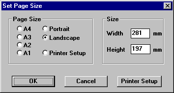

File Menu Reference
New
This gets rid of the current design. All drawings in the current design are removed. If the current design has not been saved then you are asked to confirm before the design is lost.
Open
This option opens a previously saved design for editing or printing. If there is already a design being edited it will be lost. If the current design has not been saved then you will be asked to confirm before continuing.
Close
Close the current window. This option will prompt you save any changes if you have made any.
Save
This option saves the current design, its page set up and the design details are all saved in a single file. If the design has already a file name associated with it then it will be saved using this file name without prompting. If the design has never been saved then you will be prompted for a new file name before it is saved.
Save As
This option is similar to the Save menu option; however, you will always be prompted for a file name. Using this option you can save the current design using a new file name or place it into a different directory.
Design Details
Each design has details of its full title, the author, etc. This option allows you to change these details. When the design is next saved, these details are saved with the design.
If the Display Details box is checked then these details will be displayed and printed in the bottom right hand corner of your design.
Import
Using this option you can place into the current design another previously saved or exported design.
When selected you will be prompted to enter the file name of a saved design. This design will be loaded and displayed. You can move the positioning of the imported design with the mouse. Place the design using the left hand mouse button or cancel the operation using the right hand mouse button.
Save as bitmap
Using this option you can save a copy of the design as a PNG file for sharing with people who do not have TinyCAD installed on their computers. If you have an area of the design selected then just that area will be saved into the PNG file. If nothing is selected on the design then the entire design, including the design details and design rulers will be written into the bitmap.
Use this option print to any installed the windows printer.
If the drawing is larger than the paper size of the printer, then it is split up over as many pages as it takes to print the design in tiles.
Print Preview
This option is to show you how the design would be printed on your printer. You can use this option to see if it will be printed the way you want before you actually print on paper.
Page Setup

This
option allows you to select the total size of the design.
Some commonly used values are given. If you prefer you can enter your own size in millimetres of the page. Selecting Portrait will ensure the design is taller than it is wide; selecting Landscape will ensure the design is wider than it is tall.
The printer setup option is used with the printer setup button. Click on the printer setup button and select the printer and the type of paper you will use. Now when you return to the Set Page Size dialogue the width and height of the design will be set to match exactly the printable area of the printer.
The page size is saved with the current design when it is saved. The last page size entered here will be remembered for the next new design you start.
Exit
This option will exit the program and remove it from memory.